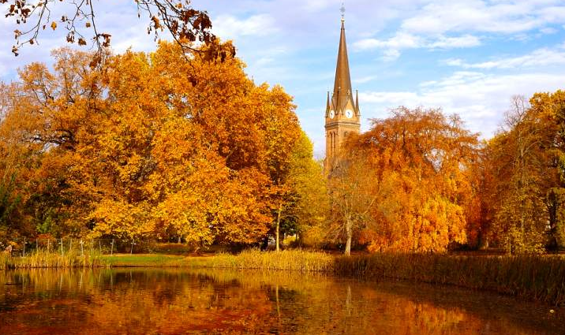

Herbst in seiner vollen Pracht
Der Herbst ist eine farbenfrohe Jahreszeit, in der sich die Natur auf den Winter vorbereitet. Die Bäume wechseln ihre Farben, die Luft wird frischer und die Landschaft erstrahlt in Gold-, Rot- und Orangetönen. Es ist eine Zeit des Wandels und der Ernte, in der sich das Jahr dem Ende neigt.

